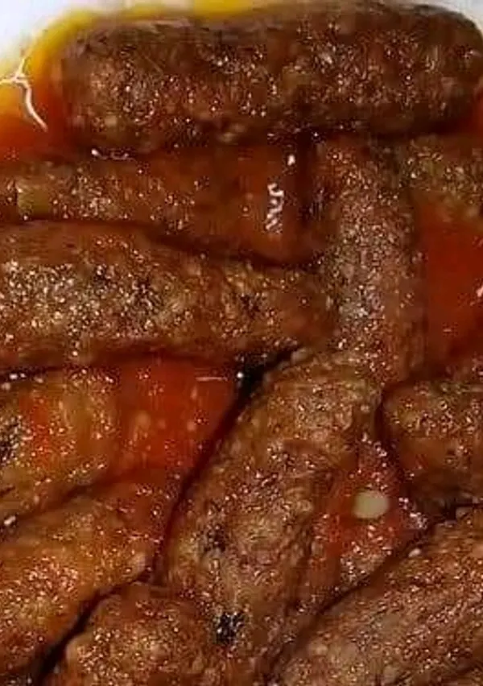

الكفتة بالارز و طرق طبخها
كفتة الأرز هي طبق شعبي في المطبخ المصري، تتكون بشكل أساسي من اللحم المفروم والأرز المطحون والخضروات (مثل
البقدونس والشبت والكزبرة) والبصل والثوم والتوابل.

تُعتبر كفتة الأرز من الأطباق الغنية بالبروتينات والكربوهيدرات، وتُقدم عادةً مع
السلطة أو الخبز أو الأرز.
المكونات:
- الكفتة بالارز ممكن ان تعملها بالبيت او عند الجزار
- 1 تصنع باللحم الجملي فقط 1كيلو ارز مع نصف كيلو لحم جملي
- 1 عدد 2 بصلة مفرومة
- 2 عدد 3 فصوص ثوم مهروس
- 1/4 كوب بقدونس مفروم
- 1/4 كوب شبت مفروم
- 1/4 كوب كزبرة مفرومة
- ملح وفلفل حسب الذوق
طريقة التحضير:
- في وعاء كبير، اخلطي اللحم المفروم مع الأرز المطحون والبصل والثوم والخضروات والتوابل.
- شكلي الخليط إلى كرات صغيرة أو أصابع حسب الرغبة.
- سخني الزيت في مقلاة على نار متوسطة، ثم اقلي الكفتة حتى تصبح ذهبية اللون.
- قدمي الكفتة ساخنة مع السلطة أو الخبز أو الأرز.
click here